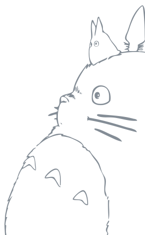
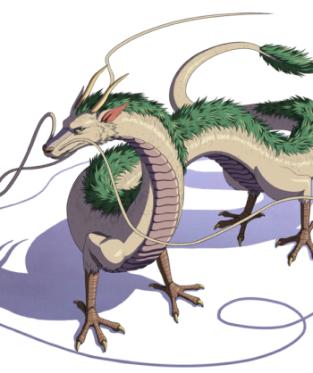
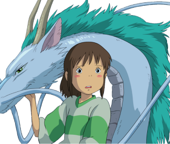
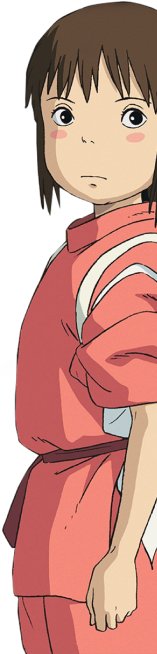

Le voyage de Chihiro ou Sen to Chihiro no kamikakushi est un film d’animation japonais écrit par Hayao Miyazaki en 2001 et produit par le célèbre studio Ghibli.
Les studios Ghibli sont l’un des ou les plus connu dans son genre, spécialisé dans la réalisation de films animés, il compte de nombreuses récompenses à son actif. Co-fondé par Hayao Miyazaki en 1985, il est vu comme l’un des pères de l’histoire de l’animation et est vu comme un cinéaste accompli.
Avisé pour un public large, les studios Ghibli dissimule derrière leurs belles histoires souvent émouvantes des morales ou des critiques de la société bien plus profonde et sombre qu’ils laissent transparaitre, faisant son succès et son originalité.
Le film parle de Chihiro, une petite fille se rendant avec sa famille dans sa nouvelle maison. Alors qu’ils commencent à se perdre sur des routes de campagne ils tombent sur un parc à thèmes qui semble abandonné mais lors de la visite les parents s’arrêtent à un stand présentant un énorme banquet. Pas rassuré, Chihiro décide de s’enfuir. 
Plus tard, lors de la retrouvaille avec ses parents elle se retrouve nez à nez avec son père et sa mère, mais, transformés en cochons. Brutalement Chihiro se retrouve emmener dans un monde féerique et cauchemardesque, épaulé par un garçon nommé Haru elle fait la rencontre d’une sorcière, cheffe du royaume des ombres.
Le film est une critique indirecte de la société actuelle, en présentant un royaume régi et corrompu pour et par l’argent, employant des esclaves comme ouvrier faisant référence au monde moderne du travail.
Le film dénonce aussi l’hyperconsommation ainsi que la différence de mode de vie entre les statues sociales